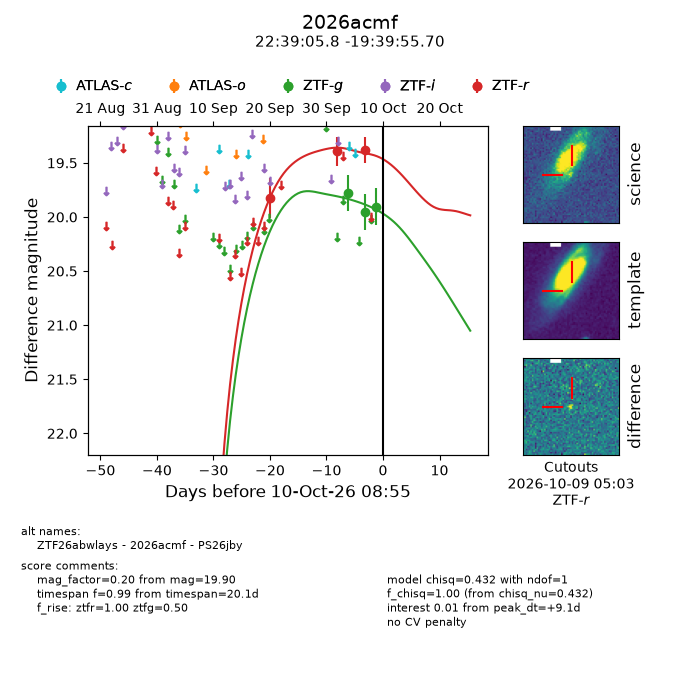
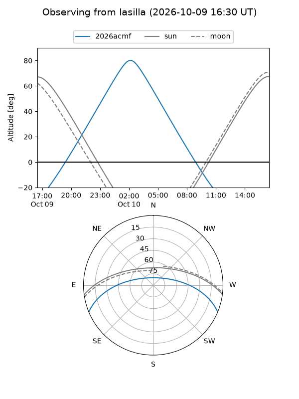
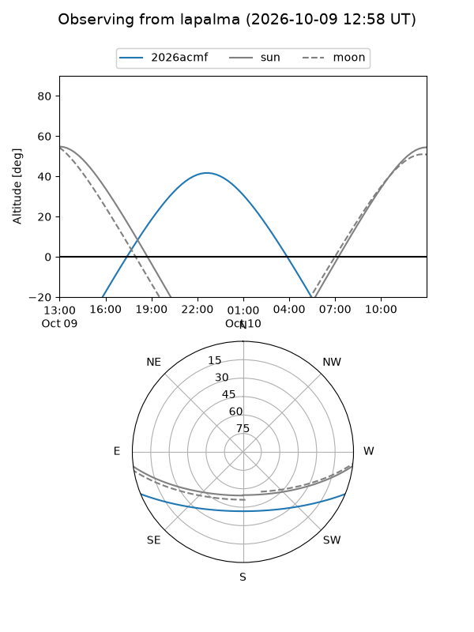
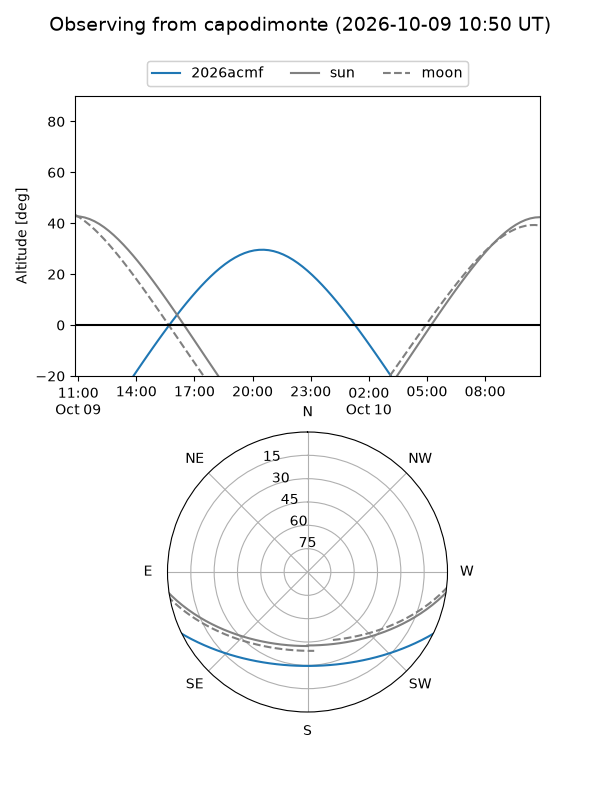
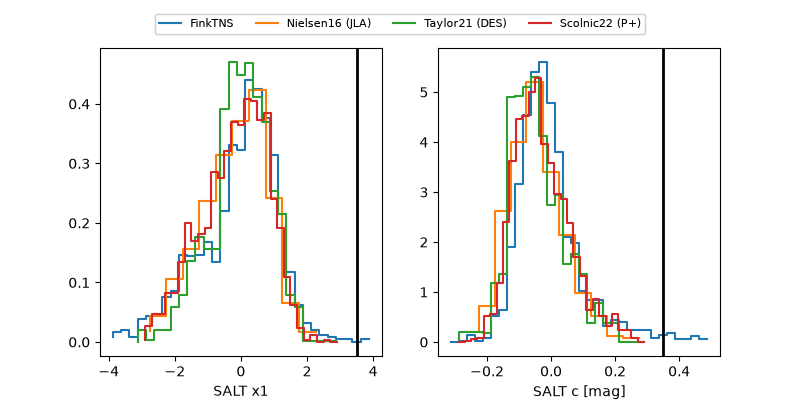

2026acmf
Target 2026acmf at 2026-10-10 08:56
Aliases and brokers:
FINK-ZTF: ztf.fink-portal.org/ZTF26abwlays
Lasair-ZTF: lasair-ztf.lsst.ac.uk/objects/ZTF26abwlays
ALeRCE-ZTF: alerce.online/object/ZTF26abwlays
YSE-PZ: ziggy.ucolick.org/yse/transient_detail/2026acmf
TNS name: wis-tns.org/object/2026acmf
Direct TNS query: direct search
alt names
ZTF26abwlays (ztf,fink_ztf)
2026acmf (tns,yse)
PS26jby (panstarrs)
Coordinates:
equatorial (ra, dec) = 339.7740,-19.66547
equatorial (HMS+DMS) = 22:39:05.76,-19:39:55.70
galactic (l, b) = (39.6180,-58.83064)
Flags:
peak dt: +9.1
Photometry:
last ztfg=19.90, ztfr=19.38
3 ztfg, 3 ztfr detections
Lightcurve

Visibility



Additional plots
